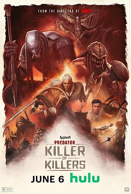

7.8
铁血战士：杀戮之王
Predator: Killer of Killers
2025
美国
评分 7.8
导演:
丹·特拉亨伯格 / Joshua Wassung
演员:
迈克尔·比恩 / 道格·科克尔 / 瑞克·冈萨雷斯 / 达米恩·C·哈斯 / 劳伦·霍尔特 / Lindsay LaVanchy / Jeff Leach
类型:
冒险,动作,惊悚,科幻
剧情简介
这一次，猎杀不再局限于丛林。影片以宏大的时空跨度讲述三位铁血战士在不同时代的狩猎传奇——从维京冰原的血战，到幕府时代的武士复仇，再到第二次世界大战的战火地狱。每一段故事都像一部独立的史诗，却在最后交织成“终极猎手”的宿命之链。开篇设定于公元873年，北欧的雪原上，狂战士部落在神祇祭典中遭遇一名来自星际的掠夺者。长斧破碎、战鼓沉寂，唯一幸存的战士用敌人的面具点燃了复仇之火。镜头一转，日本江户时期，一位堕落的浪人武士在竹林中与另一名铁血战士相遇——他以武士刀对抗热能爆能枪，传统与科技在刀光中碰撞出诡异的冷艳。而第三章将故事推向极致：二战末期的太平洋战场，美军与日军同时陷入无形的猎杀。爆炸的夜空、燃烧的战机残骸、血迹斑斑的军服，构成一场超越人类阵营的生存游戏。迈克尔·比恩饰演的老兵在坠毁的机场中发现外星符号，意识到战争背后另有主宰。丹·特拉亨伯格用冷峻的镜头语言再现《铁血战士：猎物》的原始张力，同时加入动画表现的极致视觉冲击，让动作与史诗气韵完美融合。影片并未单纯追求猎杀快感，而是以三段叙事勾勒出“猎人与被猎”的哲学循环：每一位猎手，终有一天也将被更强者盯上。不同文明、不同时代的人类在面对未知时展现的勇气与残酷，使这部作品在血腥与悲壮中透出一丝悲悯。当最后一幕，三位铁血战士的面具并列于宇宙战舰的祭坛上，战鼓声化作心跳，观众会意识到——这不是关于胜负的故事，而是一部关于“生存本能”的史诗。它提醒人类：猎杀或许永不停歇，而恐惧，正是文明的另一种延续。